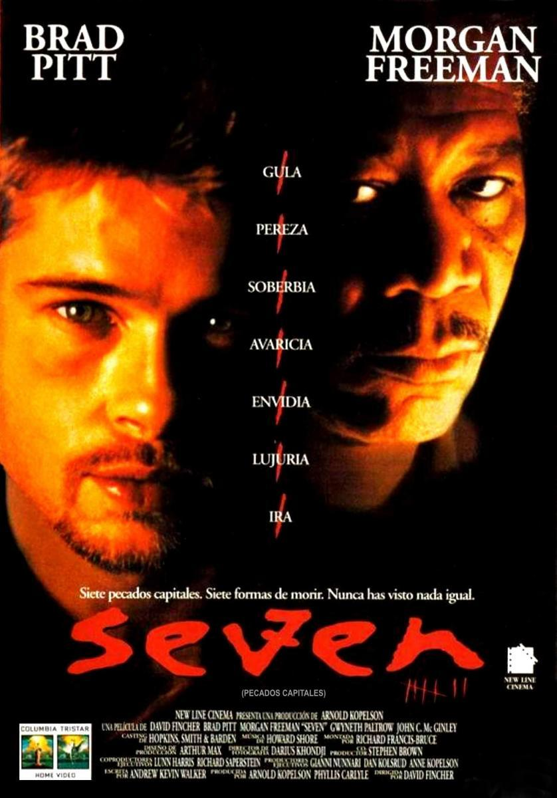

Seven

SINOPSIS
"Seven" es un thriller oscuro dirigido por David Fincher. La película sigue a dos detectives, el joven y
ambicioso David Mills y el veterano William Somerset, quienes investigan una serie de asesinatos brutales
basados en los siete pecados capitales. A medida que se adentran en la mente del asesino, se ven envueltos
en un juego mortal de pistas y simbolismos macabros. "Seven" es conocida por su atmósfera sombría,
su narrativa tensa y su sorprendente giro final.